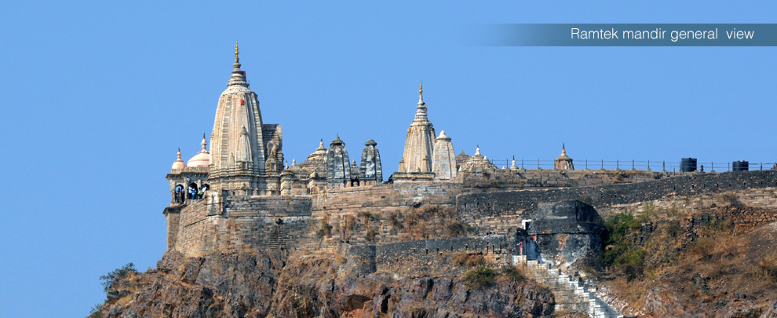
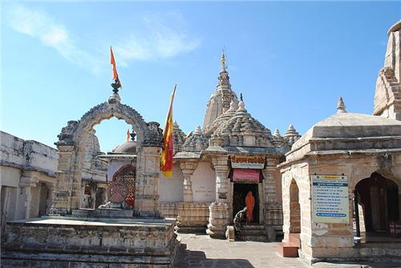

Lavesh Kumbhalkar,University of California
There can be absolutely no doubt in the fact that Nagpur is a very beautiful city in India. Sometimes Nagpur is also called the City of Oranges and is located very close to River Nag. The city of Nagpur has derived its name from this particular river. Nagpur is also referred to as the second capital of Maharashtra and it served as the capital of the central province before it became a part of Maharashtra. Nagpur also serves as the geographical epicenter of India and it is also a city of some of the leading industries in India. Nagpur is famous for its hand woven silk and cotton textiles. Nagpur is also a prosperous city with a very fine assimilation of contemporary developments and olden traditions that are found in most of the places located within Nagpur. There are many beautiful places and locations found within Nagpur that are worth visiting by the people. One such place is Ramtek. Ramtek is a beautiful town and also a municipal corporation in the district of Nagpur located within Maharashtra.
There is great history associated with Ramtek Nagpur. The historic and the famous Lord Rama’s temple is located in Ramtek. Legend has that Ramtek was that particular place where the Hindu deity Rama rested while in exile for fourteen years. It is also believed that Agastya, the Hindu sage also had his ashram located very near to the city of Ramtek. The demons indulged in the process of disrupting the religious rites and activities that were performed by the sages and they also killed many holy men.
Lord Rama could bar to hear this anymore and therefore he took a pledge or a vow to alleviate the entire world from the deadly and the treacherous activities of the demons. In the local language the meaning of ‘Tek’ is vow and hence the utterance Ramtek meaning ‘Vow of Ram’. It is also believed that any person, who takes a pledge or a vow at this place, is bestowed by the blessings of Gods for the fulfillment of his or her vow. The people have been worshiping Lord Rama’s ‘padukas’ at this place since centuries.
The temple that is found at present in Ramtek is believed to have been built by Raghuji Bhonsale, Nagpur’s King, after he emerged successful in winning the Deogarh fort at Chindwara. The temple of Lord Rama in Ramtek is located atop a hill called Ramgiri Hills. Ramtek is also very popular because of its relation with the great poet named Kalidasa; Kalidasa is believed to have written Meghdootum in the hills of the city. It is said that the beauty of the Ramgiri Hill inspired Kalidasa to write this beautiful poem. The former Indian Prime Minister Mr. Narsimha Rao took part in the elections from the constituency of Ramtek.
Ramtek is also famous for its possession of the Jain temple that is regarded to be very ancient. This temple also consists of statues of the Jain Tirthankara that are also supposed to be ancient. Ramtek became very popular after the Digambar Jain Acharya Vidyasagar visited Ramtek and then stayed at the place for four months in the year 1993, 94, 2008 and 2013.
The Digambar Jain stayed at Ramtek on chaturmas that takes place during rainy season. It was with Acharya’s inspiration that a very huge Jain temple was constructed at Ramtek. There are many miracles associated with the Jain statue reported by the Jain disciples at the temple and this is the reason why the place is also known as Atishayakshetra Ramtekji by the people of Ramtek. Apart from this, there is also an engineering college located at Ramtek and its name is KITS.
Ramtek Nagpur is sited at 79.33oE 21.4oN. The average elevation of the place is 345 meters. The main tourist attraction at Ramtek is Ram Temple and Khindasi Lake. According to the census report of 2001, Ramtek possessed a population of 22,517 people. 51% population of Ramtek is constituted of men and 49% women. The average literacy rate of the place is 75% which is a very good figure. 12% population in Ramtek is aged below 12 years.
Ramtek is considered as a very small town that lies in the northeast of Nagpur and approximately 42 kilometers away from Nagpur city. The Hindus of Nagpur hold this place with high regard because of the close association of this place with the Hindu deity Lord Rama. There is a hill located very close to Ramtek and the name of the hill is Ramgiri Hill. The famous temple of Lord Rama found in Ramtek is located atop this hill and it is believed that the temple is more than 600 years old. This temple serves as the main tourist attrition of the city.
The major tourist attractions of the place constitute the 27 temples built in Brahmin style and are found atop the Ramgiri Hills. Amongst these temples is the beautiful Lakshmana Temple that is considered to have been built in 1400 AD. The cluster of temples found on the hill has their main population in the form of monkeys. There are auto rickshaws available for the general public that they can be used for getting to the temple which is at a distance of 5 kilometers from the bus stand.
People can also use the 700 steps located at the back of the temple while returning. The beautiful Ambala tank is also located on the road that is taken for the temples. The famous Ambala tank is also lined by a number of temples on all sides. People who are interested can also take boat rides around the famous lake. Ramtek is also the venue of the famous Kalidasa Festival held in November every year. The Kalidasa Festival is a festival that carries on for fourteen days and nights and it is mainly comprised of performances by famous artists related to drama, music and dance. The Jain temple and the Ramsagar Lake also form some of the famous tourist destinations in Ramtek Nagpur.